Lab 3: Keypad Scanner
Introduction
In this lab, a design was implemented on the UPduino v3.1 FPGA to scan a 4×4 matrix keypad and display a continuous stream of hexadecimal key presses on an HDSP-521A dual seven-segment LED display. Because of the limited number of FPGA pins, the design time-multiplexes the two digits. The lab addressed the challenges of handling asynchronous user inputs from the keypad and mitigating mechanical switch debouncing.
Design and Testing Methodology
To address these challenges, the design was separated into a Datapath and a Control Unit. The Datapath manages inputs, outputs, and intermediate storage and operations on signals. The Control Unit is a finite state machine (FSM) that coordinates the flow between abstract states, sending and receiving control signals to and from the Datapath.
Additional combinational logic encodes the relationships between the keypad’s columns and rows. The on-board iCE40 UltraPlus HSOSC high-speed oscillator was configured to generate a 12 MHz clock. This clock drives the main logic, and is also divided down to 60 Hz for the display time-multiplexing. At 60 Hz, the human eye no longer perceives individual refresh events, which prevents visible flicker.
Technical Documentation
Verilog
As introduced above, the design is structured around a Controller (FSM) and a Datapath. The FSM is responsible solely for control signals and state transitions; it is implemented as a Moore machine, where outputs depend only on the current state.
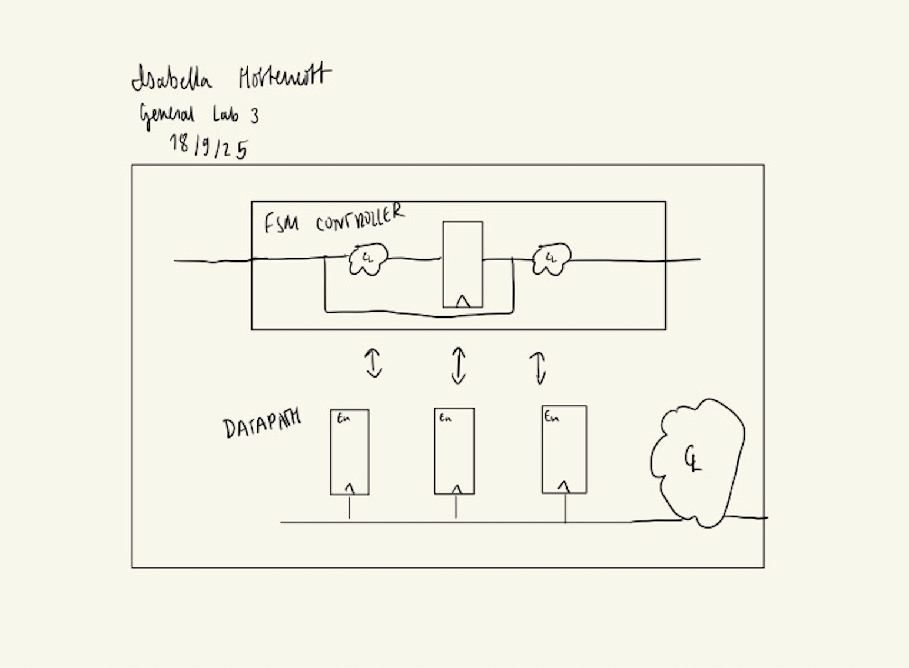
My FSM is composed of six states:
State 0 (Scan)
State 1 (Synch)
State 2 (Debounce)
State 3 (Checking)
State 4 (Send)
State 5 (Release)State transitions proceed as follows:
0 → S1 when a row detects an input
S1 → S2 when the synchronizer asserts done
S2 → S3 when the debouncer asserts done
S3 → S4 if the same key is still pressed; otherwise S3 → S0
S4 → S5 unconditionally
S5 → S0 once the key is releasedThe Finite State Machine can be seen in the figure below.
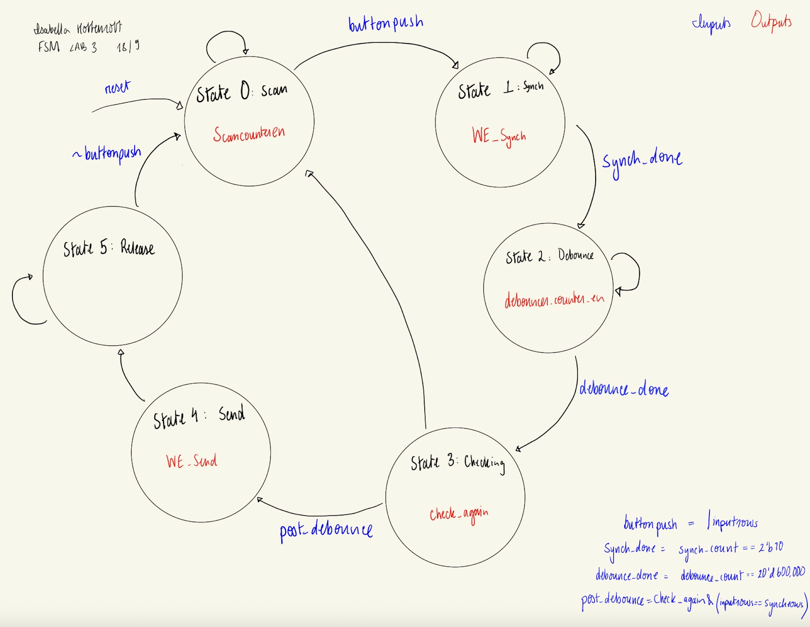
The output and next state logic is outlined in the table below.
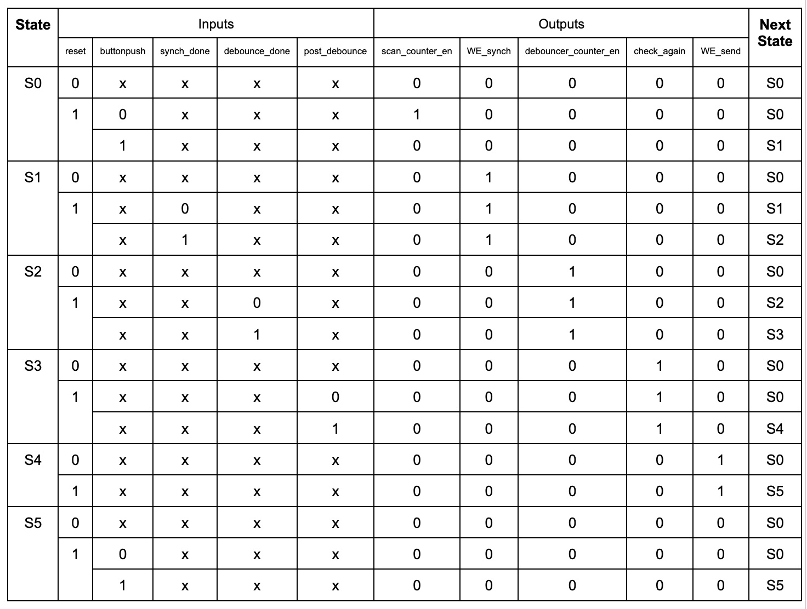
The Datapath modules implement the operations required to advance the logic under control of the FSM:
scancounter
- Represents the four keypad columns as a 2-bit value. On each rising clock edge (when enabled), it increments through the four column codes, effectively sweeping the active column. It supports enable and reset control signals.
synchronizer
- Consists of two flip-flops used to synchronize asynchronous row inputs to the system clock. It has enable and reset inputs and asserts a done signal exactly when synchronization completes. Conceptually, it has two internal modes: “actively synchronizing” and “synchronization done.”
debouncer
- Implements a counter that increments on each rising edge of the 12 MHz clock while enabled. When disabled, the counter resets to zero. After 600,000 clock cycles, representing 50 ms, the module asserts a done signal, indicating that the input has remained stable long enough to be considered debounced. Like the synchronizer, it effectively has two modes: “actively counting” and “idle.”
seg_ff
- A flip-flop based module that, when enabled, updates the right-hand digit with the most recent key press and shifts the previous value to the left-hand digit. This ensures that the most recent hex digit appears on the right, and the previous digit on the left. When disabled, the segments are turned off. It supports enable and reset.
Breadboard
The HDSP-521A requires more current than the FPGA can source directly, so two 2N3906 PNP transistors were used to drive the digit anodes. Each segment cathode is connected through a 330 Ω resistor to the FPGA, chosen to provide approximately 3 mA of segment current over the effective drop:
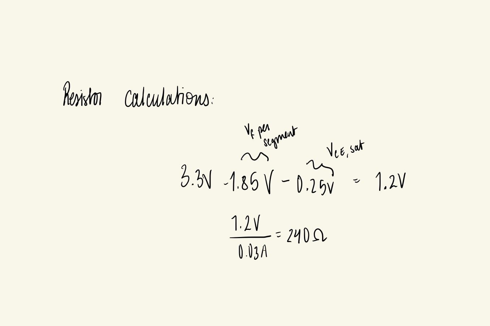
A 460 Ω resistor is placed between each transistor base and the corresponding GPIO pin to limit the base current to under 5 mA, as required by the device datasheet.
The priority encoder converts the 4-bit hex values into the appropriate seven-segment patterns, which are mapped to the HDSP-521A input pins.
The keypad has eight pins (four rows and four columns), wired as follows from Pin 0 to Pin 8: {R0, C0, R3, R1, R2, C1, C2, C3}, where Rx denotes a row and Cx denotes a column. The columns are driven active-high by FPGA GPIO pins. The rows are read by FPGA inputs and tied to 100 kΩ pull-down resistors to prevent floating values.
Block Diagram
The top-level module is lab3_ih with the following interface: * Inputs reset – from the development board inputrows – from the keypad row lines * Outputs cols – to the keypad column drivers segmentOut – to the shared segment cathodes anodeZeroOut – to the base of transistor 0 (digit 0) anodeOneOut – to the base of transistor 1 (digit 1)
lab3_ih instantiates nine submodules:
- hf_osc – high-speed oscillator primitive
- clock_div – divides 12 MHz down to 60 Hz for display multiplexing
- FSM – control unit implementing the six-state machine
- DataPath – encapsulating the datapath logic
- colrowseg0, colrowseg1 – column/row to segment encoders for each digit
- segments0, segments1 – seven-segment decoders for the two digits
- anodeselect – selects which digit’s anode is active based on the multiplexing clock
Inside DataPath.sv, five additional submodules are instantiated:
- scancounter – cycles through keypad columns
- combcol – encodes the active column
- synchronizer – synchronizes row inputs to the clock domain
- debouncer – debounces mechanical switching
- seg_ff – updates and stores the two displayed hex digits
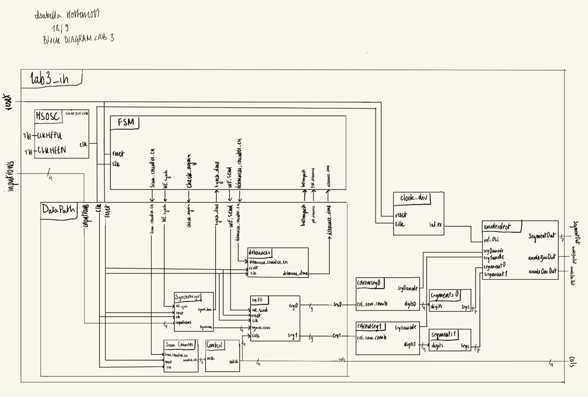
Schematic
The schematic shows the physical wiring on the breadboard: Corresponding cathodes from the two digits of the dual display share the same node (e.g., digit 1 segment A and digit 2 segment A). Each shared node is connected in series with a 330 Ω current-limiting resistor to a GPIO pin. The on-board LEDs use 1 kΩ resistors for current limiting. For each PNP transistor, the emitter is tied to 3.3 V, the collector drives the common anode of the segment anodes, and the base is in series with a 460 Ω resistor from a GPIO pin. Keypad columns are wired directly from FPGA GPIO outputs. Keypad rows are wired to FPGA GPIO inputs and additionally connected to 100 kΩ pull-down resistors.
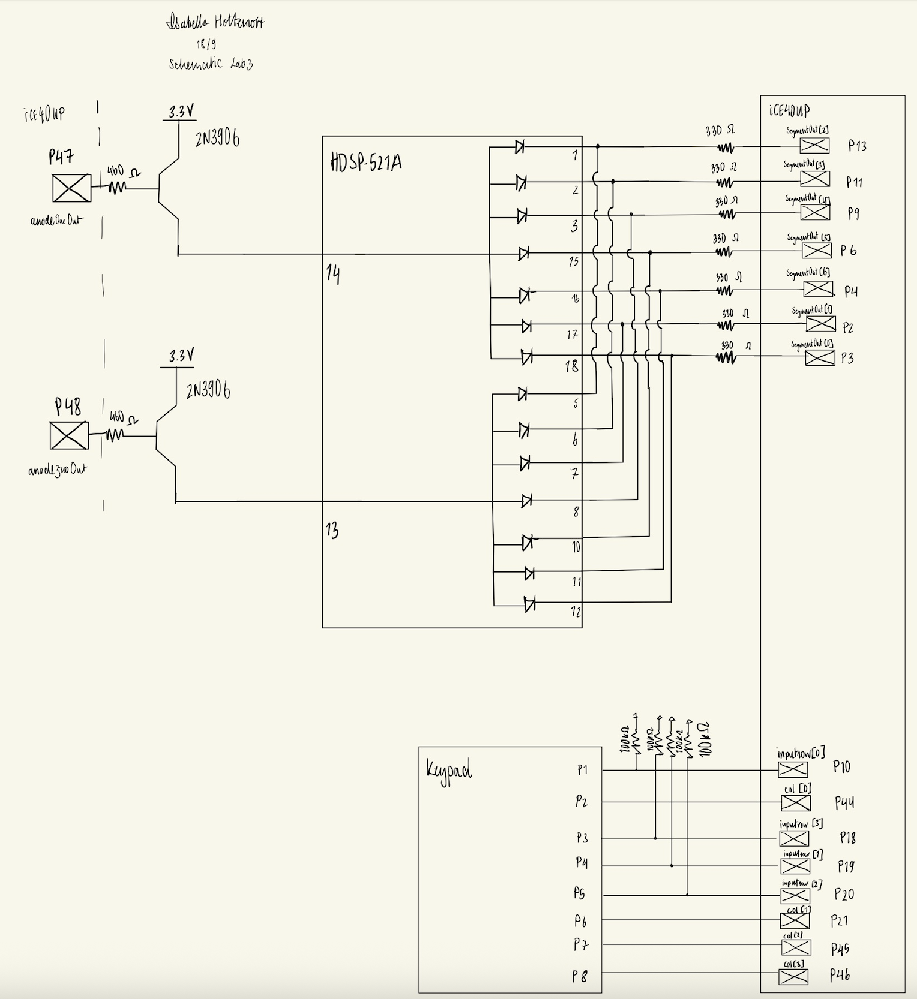
Results and Discussion
This design met the intended objectives. All module-level testbenches passed. The dual seven-segment display correctly showed the hex digits corresponding to keypad inputs. The system did not lock or get confused when an invalid, asynchronous, or mechanically-bounced input was punched in. The two digits were clearly illuminated and visually distinct, with no noticeable flicker.
Testbench Simulation
A testbench simulation was produced for every module in the design.
tb_lab3_ih:
The testbench for lab3_ih can be found here. Seven different button presses were tested and proven to output the correct value, including corner cases, such as what happens when there is a double press, or what happens when second press is asserted while the first press is still held. The testbench also verified that the column scan stops when expected, and that the row/column encoding matches the intended key. Correct segment outputs and anode control were observed. No errors occurred.
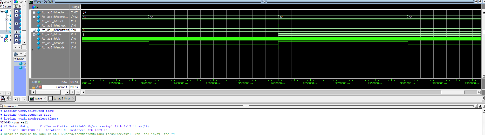
tb_DataPath:
The testbench for the DataPath module can be found here. This testbench exercises different combinations of control signals from the FSM and verifies the timing and coherence of all DataPath submodules. It includes both typical use cases and corner cases (such as invalid inputs). No errors occurred.
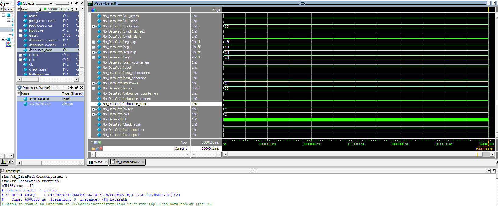
tb_FSM:
The testbench for the FSM module can be found here. All combinations of FSM inputs were tested. The testbench tracked both the current state and next state to ensure they matched the expected transitions. Two full cycles through the FSM were simulated. No errors occurred.
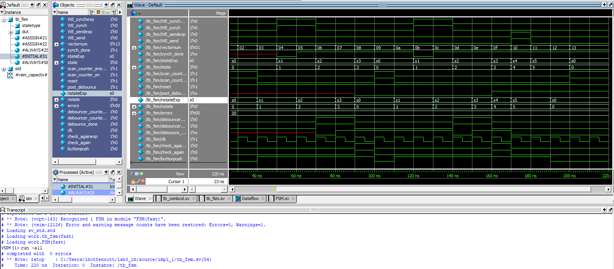
tb_CombCol:
The testbench for the CombCol module can be found here. This testbench tested all different possible combinations of inputs into the CombCol module- a simple encoder. No errors occured.
tb_clock_div:
The testbench for the clock divider module can be found here. A test oscillator was produced that ticked every 100000 time stamps, where two time stamps represent a full clock cycle. The test oscillator was compared to that produced by the clock_div module when fed in the testbench clock signal. Both oscillators can be seen to rise and fall simulataneously. The HSOSC produces a 12 MHz clock. The clock divider module has been shown to divide the input clock signal by 200000. 12 MHz/200000 = 60 Hz, which is the targeted frequency switching between displays. No errors occured.
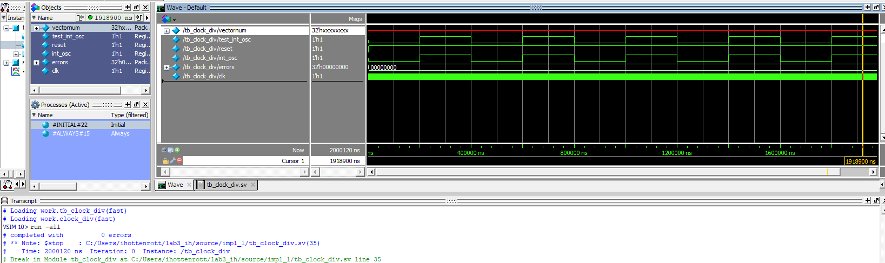
tb_anodeselect:
The testbench for the anodeselect module can be found here. The test verifies that the correct segment output and segment anode are sent off the FPGA at the correct multiplexed timestamp. The test verifies that the two segments are never sent out at the same time. No errors occured.
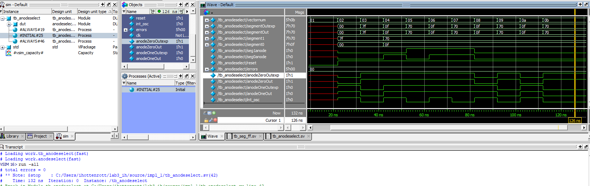
tb_colrowseg:
The testbench for the colrowseg module can be found here. The test asserts all possible inputs for this combinational module. No errors occured.
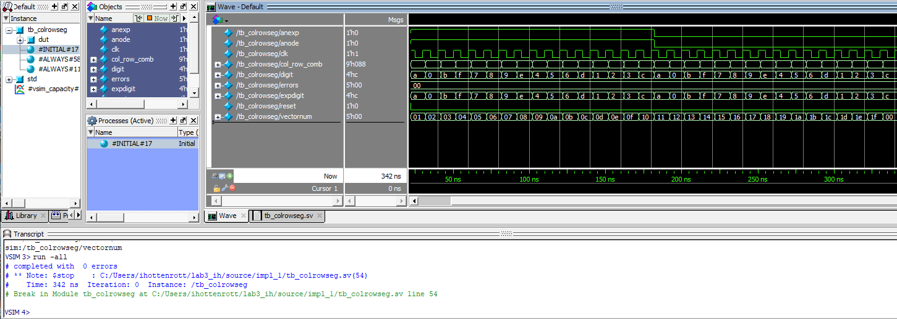
tb_debouncer:
The testbench for the debouncer module can be found here. The testbench verifies the enable behavior of the debouncer and confirms that 600,000 clock cycles are required before the done signal asserts. At 12 MHz, this corresponds to 50 ms. No errors occurred.
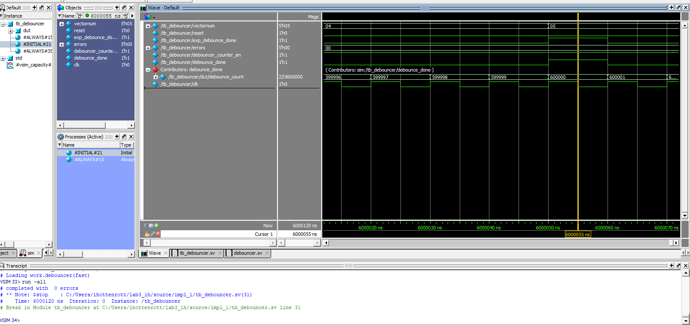
tb_scancounter:
The testbench for the scancounter module can be found here. This testbench verifies that the scanning of columns cycles through columns and equal and even amount. Correct response to the enable signal was proven. No errors occured.
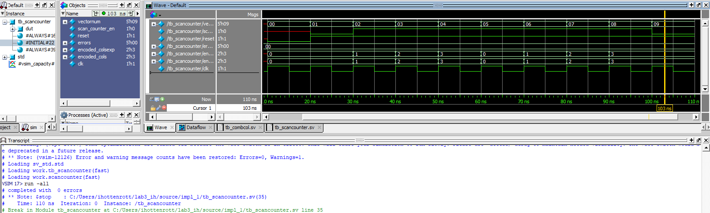
tb_seg_ff:
The testbench for the seg_ff module can be found here. A variety of different test cases were tested against the seg_ff module. Different row and column values were tested, including invalid ones, producing segment0 and segment1 signals. Correct response to the enable signal was proven. No errors occured.
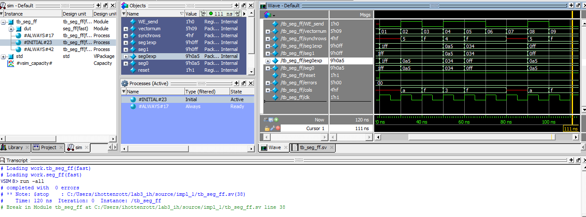
tb_synchronizer:
The testbench for the synchronizer module can be found here. This testbench confirms that, after two clock cycles, the asynchronous input is correctly synchronized to the clock domain. It also verifies the behavior of the enable input and the timing of the done signal. No errors occurred.
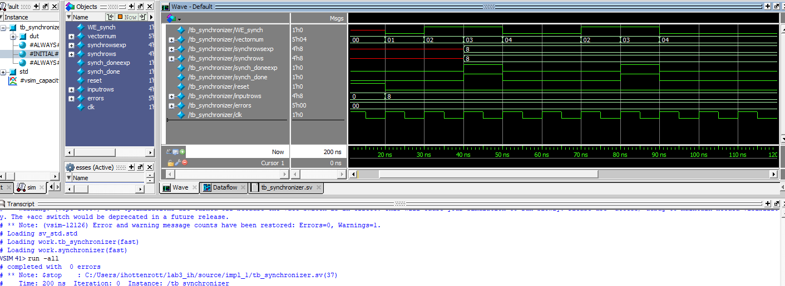
Conclusion
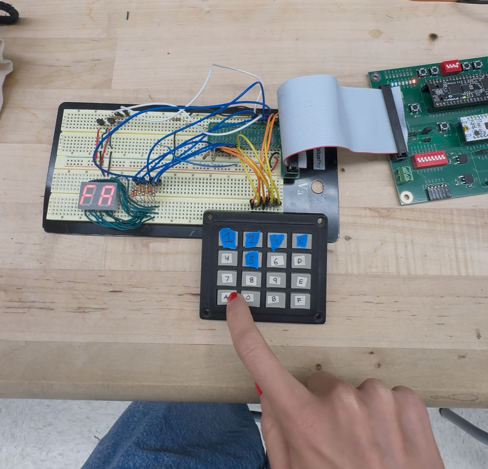
This design successfully scanned a 4×4 keypad and drove a dual seven-segment display using time-multiplexed outputs. It handled asynchronous inputs and mechanical switch bounce without lockup or misinterpretation, and the chosen components and operating points provided strong, consistent illumination. The architecture—separating FSM control from a structured Datapath—resulted in a modular design that was straightforward to test and verify.
AI Prototype Summary
I provided the LLM three different prompts for this lab to see how it would perform depending on the content of the prompts.
The LLM’s response, as well as my evaluation of the response, can be found here